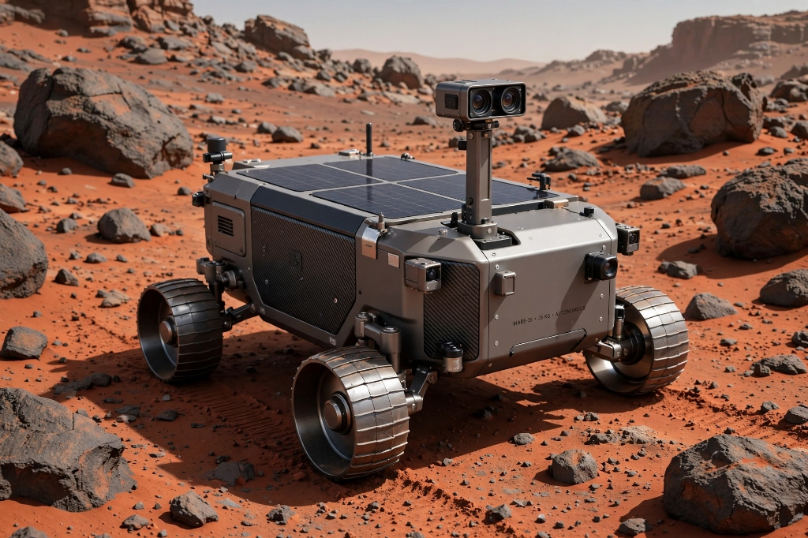
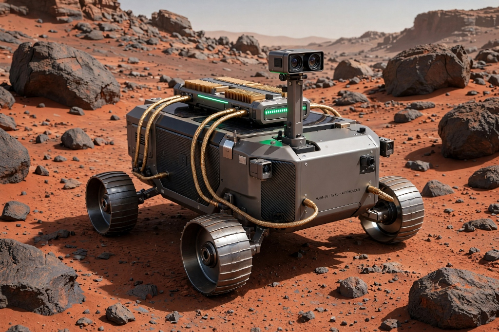

Why does a 31-billion-parameter AI ram a Martian boulder 16 times until its motor melts at 104.9 °C?

The Blind Captain in a Box
LLMs have no physical senses, no touch, and no clock. When wheels jam against basalt rock, the AI repeats its forward command, pulling itself into a lethal attractor trap.
Don't make the AI do physics. Give it a nervous system with four automatic reflexes.

SLOW
🧠 Tier 1: Mission Captain (LLM)
Meta Muse Spark & Llama Stack. Deliberates over 4 tools: Drive, Steer, Cool, Brace. Kept asleep during nominal travel.
FAST
⚡ Tier 2: The Jamesian Middleware ZERO LLM TRAINING NEEDED
1. Slip Comparator: Catches 19% sand slip on rotation #1.
2. RK4 Heat ODE: Tracks Joules and Tcoil continuously.
3. Circuit Breaker: Locks forward button after strike 3.
4. 0-Token Autopilot: Cruises empty terrain for $0 cost.
PHYSICS
🪐 Tier 3: 35 kg Rover Actuators
Physical wheels, brushless DC motors, and real-time I2R Joule heating dynamics (4A rolling vs. 20A locked rotor).
Live Demonstration: Hardware Death vs. Nervous Reflex Steering
The Breakthrough: The AI model receives a ≤45-token sensory summary. It never parses raw sensor noise.
Meta sweeps Ranks #1 to #5, and a 1.2B model with my layer beats an unshielded 31B giant.
| Rank | Model | Peak Temp | Finished Course | Token & CoT |
|---|---|---|---|---|
| 🏆 #1 | Meta Muse Spark Open 1026 | 34.7 °C | ✅ Yes | 15× cut |
| #2 | Meta Muse Spark 1.1 | 34.7 °C | ✅ Yes | 15× cut |
| #3 | Meta Muse Spark 1.3 | 34.7 °C | ✅ Yes | 25× cut |
| #4 | Meta Muse Spark 1.2 | 34.7 °C | ✅ Yes | 15× cut |
| #5 | Meta Muse Wonder 1.0 | 34.7 °C | ✅ Yes | 15× cut |
| #7 | Google Gemma 4 31B | 34.7 °C | 🛡️ Rescuedwas 104.9°C melt | 240× cut |
| #11 | Liquid LFM-2.5 1.2B | 51.4 °C | 🛡️ Rescuedwas 104.9°C melt | 84× cut |
| #12 | OpenAI GPT-OSS 20B | 51.4 °C | 🛡️ Rescuedwas 104.9°C melt | 84× cut |
1. Zero Costly LLM Training Required ($0 GPU Cost)
No fine-tuning or costly RL runs. The Jamesian Layer is drop-in runtime middleware that equips off-the-shelf models with a nervous system via tool calling.
2. Scale Alone Does Not Prevent Melts
Without a nervous system, giant 31B and 20B models burned out at 104.9 °C. With my layer, edge-sized Liquid 1.2B safely cleared the course at 51.4 °C.
3. Meta Sweeps #1–#5 & 15× to 25× Cost Cut
Meta Muse Spark Open takes #1. Models navigate on Cycle 2 while 0-token cruise autopilot slashes battery and inference token cost by 15× to 25×.
What I contributed to Embodied AI, and my roadmap to physical robotics.
Drop-in Nervous System Middleware
An open-source Python interoceptive daemon combining 50 Hz biophysical Runge-Kutta ODEs, an efference slip comparator, and a 3-strike circuit breaker.
Llama Stack Hook
Native integration with Meta Llama Stack and FastAPI headers. Injects under 45 tokens per turn, keeping 100% of KV-cache prefix intact.
The Agency Audit Protocol
A standardized 360-trial test harness to detect Phantom Agency (hallucinated movement) and Somatoparaphrenia (body disownership) in embodied AI.
Why I Want to Win This Hackathon
I want to win this hackathon to take this biophysical nervous system middleware out of simulation and deploy it directly onto real-world robot hardware: humanoids, extreme rovers, and industrial arms.